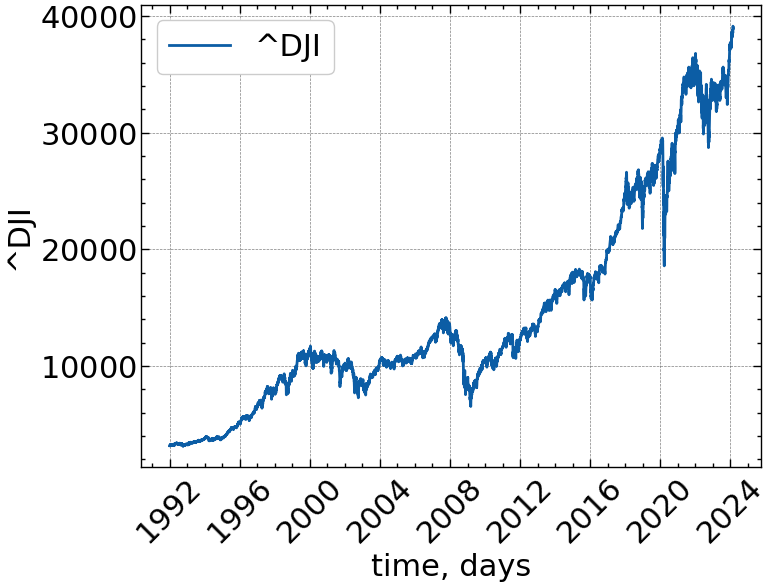
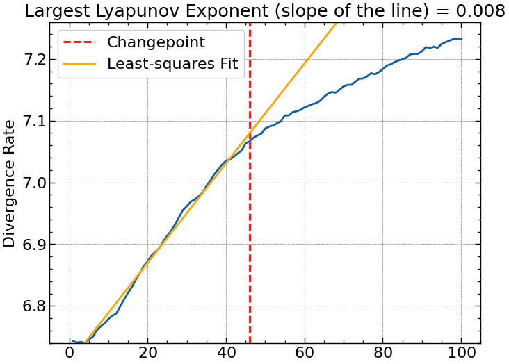
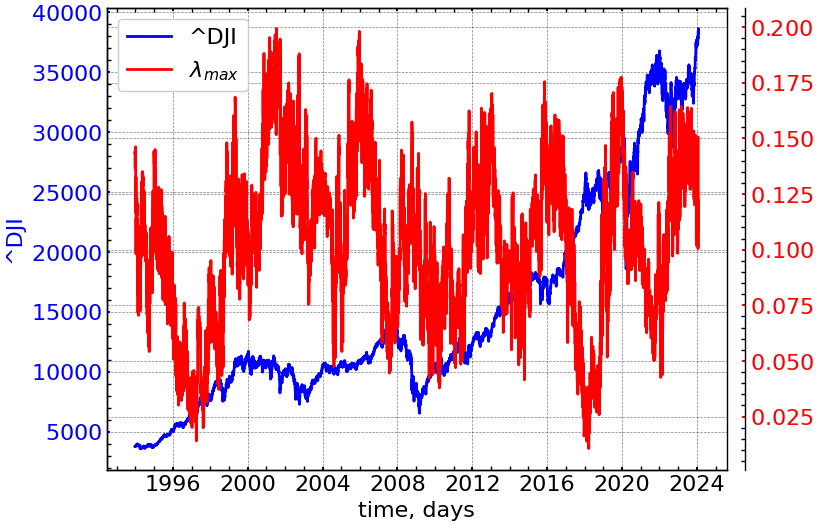
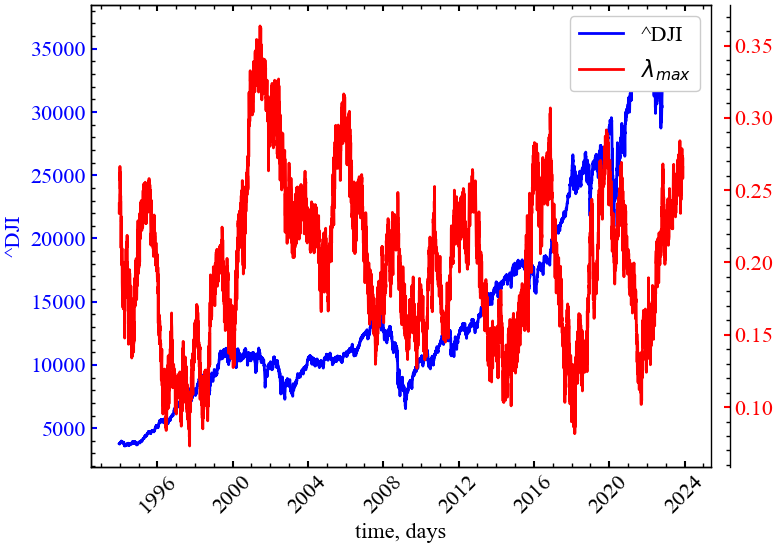

import matplotlib.pyplot as plt
import numpy as np
import neurokit2 as nk
import yfinance as yf
import pandas as pd
import scienceplots
from tqdm import tqdm
%matplotlib inline9 Лабораторна робота № 9
Тема. Показники Ляпунова та стійкість складних систем
Мета. Навчитися розпізавати та передчасно ідентифікувати катастрофічні події, використовуючи показники Ляпунова
9.1 Теоретичні відомості
Здавалося б, випадкові коливання у складних системах часто демонструють різний рівень складності та хаотичності. В умовах обмеженості даних стає важко визначити межі їх передбачуваності. Аналіз таких систем, процесів, що визначають їх динаміку, теорія хаосу розглядалися в різних галузях, таких як економіка, фінанси, фізика та ін. Що стосується аналізу, наприклад, динаміки Біткоїна, то знання про його абсолютно випадкові і, водночас, детерміновані процеси потенційно можуть пояснити флуктуації часових рядів різної природи. Протягом багатьох років теорія хаосу надавала підходи до вивчення деяких цікавих властивостей часових рядів. Найбільш поширеними є: кореляційна розмірність, BDS тест, ентропія Колмогорова, показники Ляпунова тощо.
Продемонструємо, яким чином показники Ляпунова дають можливість дослідити режими хаотичної та детермінованої поведінки.
9.1.1 Показники Ляпунова
Еволюція системи демонструє чутливу залежність від початкових умов. Це означає, що спочатку близькі траєкторії, які розвиваються, можуть швидко відхилятися одна від одної і мати абсолютно різні результати. Відповідно, при малих невизначеностях, які надзвичайно швидко посилюються, довгострокові прогнози виявляються неможливими. З іншого боку, в системі з точками тяжіння або стабільними точками відстань між ними асимптотично зменшується з часом або з кількістю точок, які мають тенденцію до зближення [1].
Щоб представити ідею більш точно, розглянемо дві послідовні траєкторії — \(x(t)\) та наближчого сусіда цієї траєкторії з невеликим зміщенням, \(x(t) + \delta(t)\), де \(\delta(t)\) представляє собою мале відхилення в часі \(t\), як показано на Рис. 9.1.
.png)
Коли динаміка двох початково близьких траєкторій порушується певною подією відстань між ними може зростати експоненційно [3]:
\[ \| \delta(t) \| \approx \| \delta(0) \| \exp(\lambda t), \tag{9.1}\]
де \(\lambda\) позначає показник Ляпунова (ПЛ); \(\delta(t)\) — відстань між точкою що розглядається та її наближчим сусідом після \(t\) ітерацій; \(\delta(0)\) — початкова відстань між точкою, що розглядається та її найближчим сусідом у початковий момент часу (\(t=0\)).
ПЛ є мірою швидкості експоненціальної розбіжності близьких один до одного траєкторій у фазовому просторі динамічної системи. Іншими словами, ПЛ показує, наскільки швидко зближуються або розходяться траєкторії, які починаються близько одна від одної, вимірюючи ступінь хаосу в системі.
У тих випадках, коли наша система \(n\)-вимірна, ми маємо стільки ж ПЛ. Для їх визначення розглянемо еволюцію нескінченно малої сфери, що зазнала збурень за різними осями. Визначивши величину збурення по вісі \(i\) як \(\delta_i(t)\), отримаємо \(n\) показників Ляпунова, що мають вид
\[ \| \delta_i(t) \| \approx \| \delta_i(0) \| \exp(\lambda_i t), \; \text{для} \; i=1,...,n. \tag{9.2}\]
Для визначення того, чи є рух періодичним або хаотичним, особливо для великих \(t\), рекомендується розглядати внесок системи в найбільший показник Ляпунова (НПЛ), оскільки діаметр \(n\)-розмірного еліпсоїда починає залежати від нього [2]. Саме НПЛ використовується для кількісної оцінки передбачуваності систем, оскільки експоненціальна розбіжність означає, що в системі, де початкове збурення було нескінченно малим, починаються втрати передбачуванності. Однак слід зазначити, що інші показники також містять важливу інформацію щодо стійкості системи, в тому числі про напрямки збіжності та розбіжності траєкторій [4].
Існування принаймні одного позитивного ПЛ зазвичай розглядається як сильний індикатор хаосу. Позитивний ПЛ означає, що початково близькі траєкторії у фазовому просторі, чутливі до початкових умов і розходяться експоненціально швидко. Негативний ПЛ відповідає випадкам, коли траєкторії залишаються близькими одна до одної, але це не обов’язково означає стабільність, і ми повинні дослідити нашу систему більш детально. Нульові або дуже близькі до нуля показники вказують на те, що збурення, практично не впливають на еволюцію траєкторій динамічної системи.
У зв’язку з великою зацікавленістю в ПЛ, з’являється все більше інструментів для розрахунку. На жаль, досі не отримано загальноприйнятого та універсального методу оцінки всього спектру показників Ляпунова за значеннями часового ряду. Одні з найбільш поширених і популярних алгоритмів були застосовані Вольфом та ін. [5], Сано і Савадою [6], а пізніше вдосконалені Екманом [7], Розенштейном [8], Парліцом [9], Бальцержаком тощо [10].
9.1.1.1 Метод Екмана
По-перше, згідно з підходом Екмана та ін. [7], ми повинні реконструювати динаміку атрактора з часового ряду \(\{x(i) \,|\, i=1,...N \}\) з розмірністю вкладень \(d_E\), і після цього побудувати \(d_E\)-вимірну орбіту, що представляє часову еволюцію
\[ \vec{X}(i) = \left[ x(i), x(i+1), ..., x(i+(d_E - 1)) \right], \; \text{для} \; i=1,...,N-d_E+1. \]
Далі, ми маємо визначити найближчі до \(\vec{X}(i)\) траєкторії:
\[ \| \vec{X}(i) - \vec{X}(j) \| = \max_{0\leq \alpha \leq d_E-1} \left| x(i+\alpha) - x(j+\alpha) \right|. \tag{9.3}\]
Сортуємо \(x(i)\) так, щоб \(x(\Pi(1)) \leq x(\Pi(2)) \leq ... \leq x(\Pi(N))\) і зберігаємо перестановку \(\Pi\) та її зворотню версію \(\Pi^-1\). Далі намагаємось знайти сусідів \(x(i)\), переглядаючи \(k=\Pi^{-1}(i)\) і скануємо \(x(\Pi(s))\) при \(s=k+1, k+2,...\) і \(k-1, k-2,...\) до тих пір, до поки не виконається умова \(x(\Pi(𝑠)) - x(i) > r\). Для вибраної розмірності вкладення \(d_E > 1\) вибираємо вибираємо значення \(s\) за умови
\[ \left| x(\Pi(s) + \alpha) - x(j + \alpha) \right| \leq r, \; \text{для} \; \alpha=0,1,...,d_E-1. \]
Після реконструкції систем до розмірності \(d_E\) потрібно визначити матрицю \(M_i\) розмірності \(d_E \times d_E\), яка описуватиме часову еволюцію векторів, із оточення траєкторії \(\vec{X}(i)\), і те, як вони відображаються на стан \(\vec{X}(i+1)\). Матриця \(M_i\) отримується шляхом пошуку сусідів
\[ M_i(\vec{X}(i) - \vec{X}(j)) \approx \vec{X}(i+1) - \vec{X}(j+1). \tag{9.4}\]
Вектори \(\vec{X}(i)-\vec{X}(j)\) можуть і не покривати \(\mathbb{R}^{d_E}\). У цьому випадку така невизначеність може призвести до хибних показників, які можуть зіпсувати аналіз. Для подолання таких перешкод проекція траєкторій визначається на підпросторі розмірності \(d_M \leq d_E\). Таким чином, простір, на якому відбувається динаміка, відповідає локальній розмірності \(d_M\), а \(d_E\) має бути дещо більшим за \(d_M\), щоб уникнути наявності хибних сусідів [11,12]. Звідси випливає, що траєкторія \(\vec{X}(i)\) асоціюється з \(d_M\)-вимірним вектором
\[ \vec{X}(i) = \left[ x(i), x(i+\tau), ..., x(i+(d_M - 1)\tau) \right] = \left[ x(i), x(i+\tau), ..., x(i+d_E - 1) \right], \tag{9.5}\]
де \(\tau=(d_E-1)/(d_M-1)\). Коли \(\tau>1\), умова (9.4) замінюється наступним виразом:
\[ M_i(\vec{X}(i) - \vec{X}(j)) \approx \vec{X}(i+\tau) - \vec{X}(j+\tau). \tag{9.6}\]
Матриця \(M_i\) визначається методом найменших квадратів. Останнім кроком є QR декомпозиція для знаходження ортогональних матриць \(Q_i\) і верхніх трикутних матриць \(R_i\) при яких
\[ M_{1+i\tau}Q_i = Q_{i+1}R_{i+1}, \; \text{для} \; i=0,1,2,... . \]
Як було запропоновано Екманом [7,13], знаючи \(K\) кількість точок на атракторі, діагональні власні значення матриці \(R_i\) та крок дискретизації \(\Delta t\), можна визначити наступне рівняння для знаходження \(k\)-го ПЛ:
\[ \lambda_k = \frac{1}{\Delta t}\frac{1}{\tau}\frac{1}{K}\sum_{i=0}^{K-1}\ln{(R_i)_{kk}}. \]
9.1.1.2 Метод Розенштейна
Алгоритм Розенштейна [8] використовує метод реконструкції вкладень із часовою затримкою, який передає найважливіші особливості багатовимірного атрактора в один одновимірний часовий ряд деякого скінченного розміру \(N\). Для часового ряду кожен вектор \(\vec{X}(i)\) буде представлений подібно до вектора (9.5) із розмірністю вкладень \(d_E\) і часовою затримкою \(\tau\). Потім на відновленій траєкторії ми ініціалізуємо пошук у просторі станів найближчого сусіда \(\vec{X}(j)\) для траєкторії \(\vec{X}(i)\):
\[ \delta_i(0) = \min_{\vec{X}(i)} \| \vec{X}(i) - \vec{X}(j) \|, \; \text{для} \; \left| i-j \right| > \text{середній період}, \]
де \(\| \cdot \|\) — це Евклідова норма, \(\vec{X}(j)\) — найближча сусідня траєкторія, \(\vec{X}(i)\) — розглядувана траєкторія.
З (9.1) ми вже знаємо, що відстань між станами \(\vec{X}(i)\) та \(\vec{X}(j)\) зростає з часом відповідно до степеневого закону, де \(\lambda\) є хорошим наближенням СПЛ. Для подальших оцінок розглянемо логарифм відстані на траєкторії \(\ln{\delta_i(k)} \approx \lambda(k\cdot \Delta t) + \ln{c_i}\), де \(\delta_i(k)\) — відстань між \(i\)-ою парою найближчих сусідів, визначених рівнянням (9.6) через \(k\) часових кроків, \(c_i\) — початкова відстань між ними, а \(\Delta t\) — часовий інтервал між вимірюваннями (період дискретизації часового ряду).
Подальший результат цього алгоритму представляє функцію від часу
\[ y(k, \Delta t) = \frac{1}{\Delta t}\frac{1}{M}\sum_{i=1}^{M}\ln{\delta_i(k)}, \]
де \(M=N-(d_E-1)\tau\) — розмір реконструйованого часового ряду, а \(\delta_i(k)\) — \(i\)-та лінія, нахил котрої приблизно рівний СПЛ. Тоді пропонується обчислювати СПЛ як кут нахилу найбільш лінійної ділянки. Знаходження такої ділянки виявляється нетривіальною задачею. Незважаючи на цю проблему, метод Розенштейна є простим для реалізації та обчислення.
9.2 Хід роботи
Розглянемо, як можна використовувати зазначені підходи для розрахунку відповідних хаос-динамічних індикаторів. Спочатку імпортуємо необхідні бібліотеки.
Далі виконаємо налаштування формату виведення рисунків.
plt.style.use(['science', 'notebook', 'grid']) # стиль, що використовуватиметься
# для виведення рисунків
size = 16
params = {
'figure.figsize': (8, 6), # встановлюємо ширину та висоту рисунків за замовчуванням
'font.size': size, # розмір фонтів рисунку
'lines.linewidth': 2, # товщина ліній
'axes.titlesize': 'small', # розмір титулки над рисунком
'axes.labelsize': size, # розмір підписів по осям
'legend.fontsize': size, # розмір легенди
'xtick.labelsize': size, # розмір розмітки по осі Ох
'ytick.labelsize': size, # розмір розмітки по осі Ох
"font.family": "Serif", # сімейство стилів підписів
"font.serif": ["Times New Roman"], # стиль підпису
'savefig.dpi': 300, # якість збережених зображень
'axes.grid': False # побудова сітки на самому рисунку
}
plt.rcParams.update(params) # оновлення стилю згідно налаштуваньРозглянемо значення фондового індексу Доу Джонса за весь період, що представляє Yahoo! Finance. В якості кінцевої дати зазначимо 1 грудня 2023 року.
symbol = '^DJI' # Символ індексу
end = '2023-12-01' # кінцева дата
data = yf.download(symbol, end=end) # вивантажуємо дані
time_ser = data['Adj Close'].copy() # зберігаємо саме ціни закриття
xlabel = 'time, days' # підпис по вісі Ох
ylabel = symbol # підпис по вісі Оу[*********************100%%**********************] 1 of 1 completed
Увага
Виконайте цей блок, якщо хочете зчитати дані не з Yahoo! Finance, а із власного файлу. Зрозуміло, що й аналіз результатів, і висновки залежать від того, з яким рядом ми працюємо
symbol = 'sMpa11' # Символ індексу
path = "databases\sMpa11.txt" # шлях по якому здійснюється зчитування файлу
data = pd.read_csv(path, # зчитування даних
names=[symbol])
time_ser = data[symbol].copy() # копіюємо значення кривої
# "напруга-видовження" до окремої змінної
xlabel = r'$\varepsilon$' # підпис по вісі Ох
ylabel = symbol # підпис по вісі ОуВиводимо досліджуваний ряд:
fig, ax = plt.subplots() # Створюємо порожній графік
ax.plot(time_ser.index, time_ser.values) # Додаємо дані до графіку
ax.legend([symbol]) # Додаємо легенду
ax.set_xlabel(xlabel) # Встановимо підпис по вісі Ох
ax.set_ylabel(ylabel) # Встановимо підпис по вісі Oy
plt.xticks(rotation=45) # оберт позначок по осі Ох на 45 градусів
plt.savefig(f'{symbol}.jpg') # Зберігаємо графік
plt.show(); # Виводимо графік

Визначимо функцію transformation() для виконання перетворення ряду до прибутковостей або стандартизованих значень:
def transformation(signal, ret_type):
for_rec = signal.copy()
if ret_type == 1: # Зважаючи на вид ряду, виконуємо
# необхідні перетворення
pass
elif ret_type == 2:
for_rec = for_rec.diff()
elif ret_type == 3:
for_rec = for_rec.pct_change()
elif ret_type == 4:
for_rec = for_rec.pct_change()
for_rec -= for_rec.mean()
for_rec /= for_rec.std()
elif ret_type == 5:
for_rec = for_rec.pct_change()
for_rec -= for_rec.mean()
for_rec /= for_rec.std()
for_rec = for_rec.abs()
elif ret_type == 6:
for_rec -= for_rec.mean()
for_rec /= for_rec.std()
for_rec = for_rec.dropna().values
return for_recВизначимо функцію для побудови парних графіків:
def plot_pair(x_values,
y1_values,
y2_values,
y1_label,
y2_label,
x_label,
file_name, clr="magenta"):
fig, ax = plt.subplots()
ax2 = ax.twinx()
ax2.spines.right.set_position(("axes", 1.03))
p1, = ax.plot(x_values,
y1_values,
"b-", label=fr"{y1_label}")
p2, = ax2.plot(x_values,
y2_values,
color=clr,
label=y2_label)
ax.set_xlabel(x_label)
ax.set_ylabel(f"{y1_label}")
ax.yaxis.label.set_color(p1.get_color())
ax2.yaxis.label.set_color(p2.get_color())
tkw = dict(size=4, width=1.5)
ax.tick_params(rotation=45, axis='x', **tkw)
ax.tick_params(axis='y', colors=p1.get_color(), **tkw)
ax2.tick_params(axis='y', colors=p2.get_color(), **tkw)
ax2.legend(handles=[p1, p2])
plt.savefig(file_name + ".jpg")
plt.show();9.2.1 Обчислення показників Ляпунова із використанням віконної процедури
Для подальших розрахунків використовуватимемо бібліотеку neurokit2. Ключовою функцією для отримання відповідних показників є complexity_lyapunov(). Вона надає доступ до розрахунків згідно з наступними алгоритмами:
- Розенштейна та ін. (1993);
- Маковскі — це спеціальна модифікація алгоритму Розенштейна, що використовує процедуру \(k\)-вимірного дерева для більш ефективного обчислення найближчих сусідів. Крім того, СПЛ обчислюється як нахил до точки зміни швидкості розбіжності (точки, де вона вирівнюється), що робить його більш стійким до параметра довжини траєкторії;
- Екман та ін. (1986).
Розглянемо її синтаксис більш детально:
complexity_lyapunov(signal, delay=1, dimension=2, method='rosenstein1993', separation='auto', **kwargs)
Параметри:
- signal (Union[list, np.array, pd.Series]) — сигнал;
- delay (int) — часова затримка (часто позначається \(\tau\) іноді називають запізненням);
- dimension (int) — розмірність вкладень (\(m\), іноді позначається як \(d\) або порядок). Якщо метод має значення
"eckmann1986", рекомендується використовувати більші значення розмірності; - method (str) — метод, який визначає алгоритм обчислення ПЛ. Може бути
"rosenstein1993","makowski"або"eckmann1986"; - len_trajectory (int) — застосовується, якщо метод
"rosenstein1993". Кількість точок даних, в яких простежуються сусідні траєкторії; - matrix_dim (int) — застосовується, якщо метод
"eckmann1986". Відповідає кількості ПЛ, які потрібно повернути; - min_neighbors (int, str) — застосовується, якщо метод
"eckmann1986". Мінімальна кількість сусідів. Якщо"default", використовуєтьсяmin(2 * matrix_dim, matrix_dim + 4); - kwargs (необов’язково) — інші аргументи, які передаються до
signal_psd()для обчислення мінімального часового розділення двох сусідів.
Повертає:
- lle (float) — оцінка СПЛ, якщо метод
"rosenstein1993", і масив ПЛ, якщо"eckmann1986"; - info (dict) — словник, що містить додаткову інформацію щодо параметрів, які використовуються для обчислення СПЛ.
Перед розрахунками виконаємо оновлення бібліотеки neurokit2:
!pip install --upgrade neurokit2 9.2.1.1 Обчислення старшого показника Ляпунова на основі методу Розенштейна
Спочатку виконаємо розрахунки для всього ряду індексу Доу Джонса:
signal = time_ser.copy()
ret_type = 1 # вид ряду:
# 1 - вихідний,
# 2 - детрендований (різниця між теп. значенням та попереднім)
# 3 - прибутковості звичайні,
# 4 - стандартизовані прибутковості,
# 5 - абсолютні значення (волатильності)
# 6 - стандартизований ряд
time_ser_ret = transformation(signal, ret_type) Далі визначимо наступні параметри:
d_E = 3 # розмірність вкладень
tau = 10 # часові затримка
approach_lyap = "makowski" # метод для розрахунку старшого показника
max_len = "auto" # встановлюємо максимальну довжину траєкторії у 10 разів більшу за затримку
sep = "auto" # оцінка середнього періоду як величину, обернену до середньої частоти спектра потужності і візуалізуємо результат:
lle, _ = nk.complexity_lyapunov(signal=time_ser_ret,
method=approach_lyap,
dimension=d_E,
delay=tau,
max_length=max_len,
separation=sep,
show=True)

На Рис. 9.3 показано типовий графік (суцільна крива) залежності середньої розбіжності траєкторій від часу \(\Delta t\); помаранчева лінія має нахил, що дорівнює теоретичному значенню \(\lambda_{max}\). Коротка синя ділянка до переходу через червону пунктирну лінію використовується для вилучення найбільшого показника Ляпунова. Як ми можемо бачити, крива змінюється при більших часових періодах, оскільки система обмежена у фазовому просторі і середня дивергенція не може перевищувати “довжину” атрактора. Отриманий показник Ляпунова вказує на те, що індекс Доу Джонса знаходиться на межі між хаосом та стабільність, тобто індекс дивергенції динаміки ряду врівноважується конвергенцією.
Як ми вже мали змогу переконатись, складні системи мінливі і система з плином часу може проявляти як конвергенцію чи дивергенцію, так і повну незмінність у часі.
Далі розглянемо динаміку досліджуваної системи з часом у рамках процедури ковзного вікна. Визначимо наступні параметри:
window = 500 # ширина вікна
tstep = 1 # часовий крок вікна
length = len(time_ser) # довжина самого ряду
ret_type = 1 # вид ряду:
# 1 - вихідний,
# 2 - детрендований (різниця між теп. значенням та попереднім)
# 3 - прибутковості звичайні,
# 4 - стандартизовані прибутковості,
# 5 - абсолютні значення (волатильності)
# 6 - стандартизований ряд
d_E = 3 # розмірність вкладень
tau = 1 # часові затримка
approach_lyap = "makowski" # метод для розрахунку старшого показника: rosenstein1993, makowski
max_len = "auto" # встановлюємо максимальну довжину траєкторії у 10 разів більшу за затримку: auto
sep = "auto" # оцінка середнього періоду як величину, обернену до середньої частоти спектра потужності
LLE = [] # масив для збереження СПЛТепер можна приступати до віконної процедури:
for i in tqdm(range(0,length-window,tstep)): # фрагменти довжиною window
# з кроком tstep
fragm = time_ser.iloc[i:i+window].copy() # відбираємо фрагмент
fragm = transformation(fragm, ret_type) # виконуємо процедуру
# трансформації ряду
lle, _ = nk.complexity_lyapunov(signal=fragm,
method=approach_lyap,
dimension=d_E,
delay=tau,
max_length=max_len,
separation=sep,
show=False)
LLE.append(lle)100%|██████████| 7539/7539 [00:27<00:00, 271.39it/s]Зберігаємо отримані результати в текстовому файлі:
name = f"LLE_name={symbol}_window={window}_step={tstep}_rettype={ret_type}_\
d_E={d_E}_tau={tau}_approach={approach_lyap}_max_len={max_len}_separation={sep}.txt"
np.savetxt(name, LLE)Визначаємо параметри для збереження рисунків:
# позначення показника Ляпунова в легенді рисунку
label_lyap = r'$\lambda_{max}$'
# назва рисунку
file_name = f"LLE_name={symbol}_window={window}_step={tstep}_rettype={ret_type}_\
d_E={d_E}_tau={tau}_approach={approach_lyap}_max_len={max_len}_separation={sep}"
# колір показника
color = 'red' та виводимо результат:
plot_pair(time_ser.index[window:length:tstep],
time_ser.values[window:length:tstep],
LLE,
ylabel,
label_lyap,
xlabel,
file_name,
color)

Бачимо (Рис. 9.4), що СПЛ починає спадати в кризові та передкризові стани, що вказує на зростання корельованності досліджуваної динаміки. У момент кризи СПЛ починає зростати, що вказує на зростання дивергенції в кризові періоди.
9.2.1.2 Обчислення показників Ляпунова на основі методу Екмана
Визначимо наступні параметри:
window = 500 # ширина вікна
tstep = 1 # часовий крок вікна
length = len(time_ser) # довжина самого ряду
ret_type = 1 # вид ряду:
# 1 - вихідний,
# 2 - детрендований (різниця між теп. значенням та попереднім)
# 3 - прибутковості звичайні,
# 4 - стандартизовані прибутковості,
# 5 - абсолютні значення (волатильності)
# 6 - стандартизований ряд
d_E = 4 # розмірність вкладень вихідного простору (кількість показників)
d_M = 3 # розмірність вкладень підпростору
approach_lyap = "eckmann1986" # метод для розрахунку старшого показника
sep = "auto" # оцінка середнього періоду як величину, обернену до середньої частоти спектра потужності
min_neighb = "default" # min(2 * matrix_dim, matrix_dim + 4)
LE = [] # масив для збереження ПЛ Тепер переходимо до розрахунків:
for i in tqdm(range(0,length-window,tstep)): # фрагменти довжиною window
# з кроком tstep
fragm = time_ser.iloc[i:i+window].copy() # відбираємо фрагмент
fragm = transformation(fragm, ret_type) # виконуємо процедуру
# трансформації ряду
le, _ = nk.complexity_lyapunov(signal=fragm,
method=approach_lyap,
dimension=d_E,
matrix_dim=d_M,
min_neighbors=min_neighb,
separation=sep,
show=False)
LE.append(le)100%|██████████| 7539/7539 [08:34<00:00, 14.66it/s]Зберігаємо отримані результати в текстових файлах:
LE = np.array(LE)
for i in range(d_E):
np.savetxt(f"LE number={i+1}_name={symbol}_window={window}_step={tstep}_rettype={ret_type}_\
d_E={d_E}_d_M={d_M}_approach={approach_lyap}_min_neighbors={min_neighb}_separation={sep}.txt", LE[i])Візуалізуємо отримані результати:
fig, ax = plt.subplots(LE.shape[1]+1, 1, sharex=True)
ax[0].plot(time_ser.index[window:length:tstep], time_ser.values[window:length:tstep], label=symbol)
ax[0].set_ylabel(symbol)
ax[0].legend()
for i in range(1, LE.shape[1]+1):
ax[i].plot(time_ser.index[window:length:tstep], LE[:, i-1], color='red', label=fr'$\lambda_{i}$')
ax[i].set_ylabel(fr"$\lambda_{i}$")
ax[i].legend()
ax[-1].set_xlabel(xlabel)
fig.subplots_adjust(hspace=0)
plt.savefig(f"LE name={symbol}_window={window}_step={tstep}_rettype={ret_type}_\
#d_E={d_E}_d_M={d_M}_approach={approach_lyap}_min_neighbors={min_neighb}_separation={sep}.jpg")
plt.show();
Як показано на Рис. 9.5, спектр показників Ляпунова реагує особливим чином на кризові події фондового ринку. Видно, що, по-перше, \(\lambda\) спадає в передкризові періоди та зростає під час кризи. Особливо характерною є дана динаміка перед кризами 1997, 2001, 2008, 2011, 2015, 2020 років. У передкризові періоди спостерігається конвергенція траєкторій у фазовому просторі системі, що говорить про зростання її впорядкованості. Сам кризовий та посткризовий періоди характеризуються дивергенцією, тобто розбіжністю траєкторій системи. По-друге, видно, що, спускаючись від 1-го до 4-го показника Ляпунова, ми поступово втрачаємо інформацію про динаміку системи. Тобто, перші найбільші показники представляються в даному випадку найбільш інформативними. Можливо, у даному випадку, має сенс розглядати лише старший ПЛ.
На Рис. 9.6 представлено порівняльну динаміку індексу Доу-Джонса та старшого показника Ляпунова на основі методу Екмана.
Зберігаємо показник у текстовому файлі:
name = f"LE Eckman name={symbol}_window={window}_step={tstep}_rettype={ret_type}_\
#d_E={d_E}_d_M={d_M}_approach={approach_lyap}_min_neighbors={min_neighb}_separation={sep}.txt"
np.savetxt(name, LE[:, 0])Визначаємо параметри для збереження рисунків:
# позначення показника Ляпунова в легенді рисунку
label_lyap = r'$\lambda_{max}$'
# назва рисунку
file_name = f"LE Eckman name={symbol}_window={window}_step={tstep}_rettype={ret_type}_\
#d_E={d_E}_d_M={d_M}_approach={approach_lyap}_min_neighbors={min_neighb}_separation={sep}"
# колір показника
color = 'red' Візуалізуємо старший показник Ляпунова:
plot_pair(time_ser.index[window:length:tstep],
time_ser.values[window:length:tstep],
LE[:, 0],
ylabel,
label_lyap,
xlabel,
file_name,
color)

Теорія хаосу та її інструментарій залишаються величезним викликом для дослідників різних галузей науки. У світі показників Ляпунова зберігається зростаючий інтерес до їх визначення, чисельних методів та застосування до різних складних систем. Підсумовуючи, СПЛ дозволяє встановити:
- область чутливості до початкових умов;
- область хаосу;
- область стабільності.
9.3 Завдання для самостійної роботи
- Оберіть часовий варіант згідно вашого варіанту
- Визначіть період прогнозованості досліджуваної системи за діаграмою розбіжності фазових траєкторій
- Проаналізуйте динаміку старшого показника Ляпунова та його спектру за описаними в лабораторній роботі алгоритмами
9.4 Контрольні запитання
- Поясніть, які відмінності хаотичного ряду динаміки від інших процесів.
- Яким чином наявність або відсутність хаотичності може впливати на можливість прогнозування розвитку певного процесу?